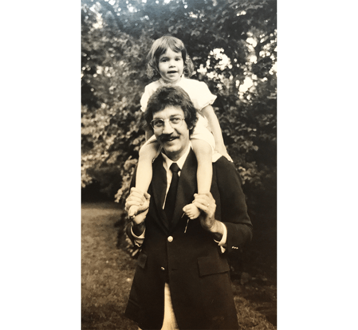
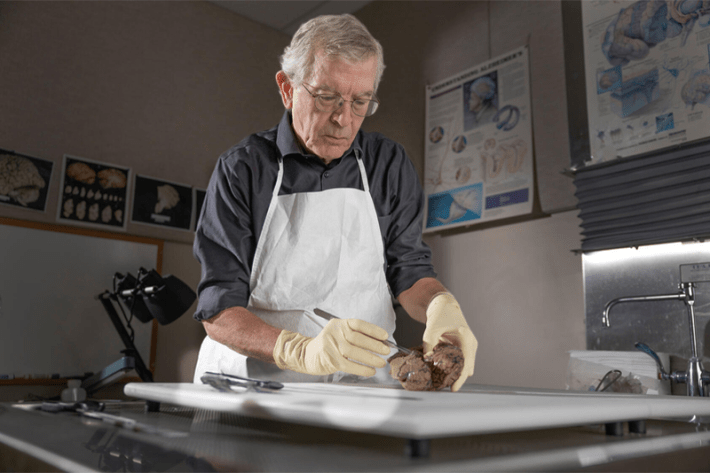

On a brisk January evening this year, I was speeding down I–295 in northeast Florida, under a full moon, to visit my dad’s brain. As I drove past shadowy cypress swamps, sinewy river estuaries, and gaudy-hued billboards of condominiums with waterslides and red umbrellas boasting, “Best place to live in Florida,” I was aware of the strangeness of my visit. Most people pay respects to their loved ones at memorials and grave sites, but I was intensely driven to check in on the last remaining physical part of my dad, immortalized in what seemed like the world's most macabre library.
Michael DeTure, a professor of neuroscience, stepped out of a golf cart to meet me. “Welcome to the bunker. Just 8,000 of your quietest friends in here,” he said in a melodic southern drawl, grinning in a way that told me he’s made this joke before. The bunker is an indiscriminate warehouse, part of the Mayo Clinic’s Jacksonville, Florida campus that houses its brain bank.
DeTure opened the warehouse door, and I was met with a blast of cold air. In the back of the warehouse sat rows of buzzing white freezers. DeTure pointed to the freezer where my dad’s brain sat in a drawer in a plastic bag with his name written on it in black Sharpie pen. I welled up with tears and a feeling of intense fear. The room suddenly felt too cold, too sterile, too bright, and my head started to spin. I wanted to run away from this place.
And then my brain escaped for me. I saw my dad on a beach on Cape Cod in 1977. He was in a bathing suit, shirtless, lying on a towel. I was 7 years old and snuggled up to him to protect myself from the wind. He was reading aloud to my mom and me from Evelyn Waugh’s novel, A Handful of Dust, whose title is from T.S. Eliot’s poem, “The Wasteland”: “I will show you fear in a handful of dust.” He was reading the part about Tony Last, an English gentleman, being imprisoned by an eccentric recluse who forces him to read Dickens endlessly.
The room suddenly felt too cold, too sterile, too bright, and my head started to spin.
The memory calmed me down. The brain in a freezer bag, after all, was not my dad. My dad was Christopher Lehmann-Haupt, a New York Times book critic who spent decades, from the 1960s to the ’90s, shaping literary culture with an authority that made authors both revere and fear him. At home, my mom, Natalie Robins, a poet and author, called him “Crit,” her pet name for the tough critic who was most tough on himself, reading books late into the night, clinging to a glass of Christian Brother’s brandy, reclined in a broken swivel chair.
As we walked through the freezer room, I continued to think about my dad’s brain, nestled in a shelf among other frozen brains, and my fear gave way to a strange mix of wonder and sadness. The once active neurons that fired electrical and chemical signals from axons to dendrites inside the crevices and folds of the left frontal lobe, home to the language center, were now quiet. The memories produced in the hippocampus were now frozen. These parts worked in concert to convert my dad’s experiences into the language of more than 4,000 essays and book reviews, two novels, and a memoir about his life as a New York Yankees fan.
Beginning when he was in his 70s, my dad loyally volunteered for a longitudinal study on the aging brain run by the Albert Einstein College of Medicine. He would drive from home in the Riverdale neighborhood of the Bronx to a nearby lab at Montefiore Hospital every few months to take written tests and participate in interviews to evaluate his memory and mental agility. The purpose was to contribute to the body of scientific data on neurodegenerative diseases, such as dementia and Alzheimer’s disease, which Nature Medicine recently predicted could double in the United States over the next 35 years to 1 million new cases annually. My dad became so inspired by the study that he agreed to donate his brain for further research when he died.
I came to the brain bank because I wanted to learn how his brain was contributing to science. And I came for my own reasons. I have always wondered about my dad’s mind, how it worked, why it told stories, and how our family stories going back generations shaped his life. What I learned was emotional and startling, particularly when the neuropathologist explained to me what my dad’s brain revealed about how he died. My visit helped me find the deeper connection with my dad that I had yearned for growing up.
As my dad was taking tests about his brain at the Albert Einstein College of Medicine, he was writing a lot, working on a memoir about his experience working for The New York Times and the Jewish side of his family that he knew little about. He was calling it Re-View.
He had been in therapy in the last decade of his life, working out family trauma related to his parents’ tumultuous divorce during the time his father moved the family to Berlin after World War II. My grandfather, Hellmut Lehmann-Haupt, was an expert on rare books and the Gutenberg printing press. After the war, he took an assignment from the Monuments, Fine Arts, and Archives program, which the Allied powers had set up to hunt for artistic and cultural artifacts that had been stolen by the Nazis. My dad wrote that “my father’s assignment was to nurture and to revive the artists that Hitler and his henchmen had trod down for being ‘degenerate,’ their characterization of any imagery that deviated from their narrow totalitarian ideal of the human form.”
My dad also wrote about his relationships with many authors of his era: William F. Buckley Jr., Robert Caro, John Cheever, E.L. Doctorow, Joan Didion, Nora Ephron, Philip Roth, Lillian Hellman, and critic Lionel Trilling. He wrote that he and my mom Natalie “got so close to Bill and Pat Buckley that once when they were squabbling, which they did very often, Natalie was able to take their hands and say, ‘Now, children.’ About our being friends with both Hellman and Trilling, mortal enemies, Mailer once remarked to Natalie, ‘Someday, after you die, especially if you go to Hell, you’ll have to choose between those two.’”

FATHER AND DAUGHTER: The author and her dad, Christopher Lehmann-Haupt, an influential book critic, at home in New York City in 1972. "I have always wondered about my dad’s mind," Rachel Lehmann-Haupt writes today. Photo by Nancy Crampton.
My dad was in relatively good health for his age, but he spent many years writing while chain-smoking unfiltered Camel cigarettes. At 45, he had a silent heart attack, so he quit smoking, began taking statins and took up jogging around the neighborhood.
When he turned 80, he would occasionally give me updates on his brain study, I think mainly to assure me that he didn’t have dementia. He was the kind of parent who never wanted to become a burden to his children. I mostly listened because I hoped hearing about the study would help me get to know him better. We were close, yet he was emotionally distant like many men of his generation. Getting his attention always felt like a struggle. He seemed to soften in those years and enjoy life more. He even gave up drinking brandy, and one day, I saw him doing deep knee bends in the kitchen. He loved being a grandfather and wanted to stay healthy to extend his time with us.
Then, one evening, in late October of 2018, at the age of 84, he suffered a stroke. My mom called me from an ambulance rushing from their Riverdale home to the Columbia Presbyterian emergency room on West 168th Street. Through her tears, she described how he had made a stir fry for dinner and then returned to his study to write. An hour later, she came downstairs to show him a photo of my son on her phone and found him unconscious and paralyzed in front of his computer.
In the emergency room, the doctors discovered that soon after he sat down at his desk, a blood clot was released from his heart and traveled up a cerebral artery into his brain, stopping blood flow. They rushed him into endovascular surgery to clear the clot, but when he woke up, he could no longer speak. When the nurses handed him a pen, his hand could no longer form letters. It was a poetic and cruel twist of fate for a man whose life was shaped by words and stories. I didn’t know what was worse: his impending death or that we couldn’t talk about what was going through his mind. “Be logical.” he always told me, when I went to him for advice, but logic was lost on me now. I just longed for his comforting words.
Over 10 days, our family watched him fade away, and soon, we made the collective decision to turn off the machines that were keeping his heart pumping. My dad had made it clear in his medical directive that he didn’t want “death staved off” if he no longer could live independently. In those hours, my mother, brother, and I were making that decision, I didn’t want to let go, but then I placed a pen in his hand to see if he could still hold it, and he couldn’t. His literary brain had lost language and could no longer produce the words that drove his life and defined so much of his identity. I knew then it was time to say goodbye.
I left the cold brain bank and piled into a golf cart with DeTure and Dennis Dickson, the neuropathologist who performed the autopsy of my dad’s brain. We zipped past modern glass research buildings, many of which contain a vast art collection that includes a chandelier of 170 glass-blown flowers by Dale Chihuly and a triptych of animal paintings by Andy Warhol called “Endangered Species.” There were bronze nudes on lawns donated by the wealthy families of former patients and a human-made lake dotted with palm trees punctuated by a fountain.
Dickson and I sat in his small office just down the hall from the dissection lab. In a modest, adroit Midwest manner, Dickson looked at me. “It’s rare for a loved one to come to visit a brain. Maybe we get one a year, usually a benefactor who donated.” He walked me through how my dad’s brain got to this unusual library. In New York, a pathologist removed his brain, and half was fixed in the chemical formalin, and the other half was frozen, and then both were flown down to Florida in a box.
The formalin-fixed half of his brain was set in a refrigerator to be dissected and sampled in the “brain-cutting conference.” Dickson cut standardized sections from the major brain areas while Ph.D. students read out the donors’ cause of death. A neurohistologist—a specialist who studies the microscopic anatomy and connections of the brain—embedded the tissue sample into paraffin wax and applied pink and purple dyes to make slides resembling fibrous stained-glass windows. These slides are used to look for specific pathologies under a microscope and digitized in a scanner so researchers can view the tissue on a large scale on a computer screen to analyze the cells. Brains are de-identified so scientists don’t know who the donor was.
My dad was a New York Times book critic whose authority made authors revere and fear him.
Dickson told me that the report found no signs of Alzheimer’s disease. That jibed with what Richard Lipton, the head investigator of the Einstein study, had told me about my dad.* “Our staff thought he was amazing, articulate, and kind,” Lipton said. “I have rarely seen people at age 84 with verbal memories that good.” It was hypertension and atherosclerotic disease that caused the blood clot to blast through his brain. I thought about his ashtrays filled with smashed cigarette butts, his volcanic reactions to stress, and love of fatty foods.
Dickson said my dad had two contiguous strokes in the temporal and frontal lobes, the location of the control centers of language. The second stroke destroyed almost the entire temporal lobe, including the medial temporal lobe structures such as the amygdala, where emotions get processed, and the hippocampus, where memories form. The temporal and frontal lobes also hold the language control centers, Broca’s and Wernicke’s areas. “The affected regions are very much in the business of expressive and receptive language, both understanding what’s said to you and being able to formulate semantics with meaningful sentences,” Dickson said.
Because my Dad could understand us in his final 10 days in the hospital, but he couldn’t speak or read, they concluded that he had Broca’s aphasia. In 1861, French neurosurgeon and anthropologist Pierre Paul Broca studied patients with language deficits and aphasias. He discovered the role of the left frontal lobe in speech production. It was the first time a scientist showed that the two hemispheres of the brain, though seemingly symmetrical, have different functions. He famously said, “Nous parlons avec l'hémisphère gauche,” meaning “We speak with the left hemisphere.”
I was curious whether, when he was dying, even though he couldn’t express himself, my dad’s memories were still in there. Dickson said he couldn’t speak to that. Later, I spoke to John Crary, professor of neuroscience, artificial intelligence and human health at the Icahn School of Medicine at Mount Sinai, who runs its brain bank. He told me that while aphasia can impact the ability to access semantic memory and create words, that memory itself is generally still present. Although my dad could not express his thoughts and memories, I felt relieved knowing they were still there in the last 10 days we were all together.
There was something else I had to ask Dickson in his office. A few months after my dad died, my mom received his autopsy report. It was written in medical language that laypersons can only puzzle through. But one passage did jump out. It said several sections of my dad’s brain had lesions that resulted not from the stroke but “foreign material.” I had to accept that my dad was gone, but I always wondered about that material, how it got there, and whether it was connected in any way to his death.
Dickson told me he suspected the foreign material was polymer granules that sheared off a catheter that doctors had inserted into my dad’s arteries to assess the damage to his heart. As blood flowed to the brain, the polymer material “occluded” and “distended” tiny vessels in the brain, blocking blood flow and oxygen. While the initial stroke was likely caused by a blood clot due to atherosclerosis, the subsequent stroke may have been caused by the brain lesions that formed in response to the polymer material.
Your dad, Dickson said, “got the worst of both worlds. He got the stroke, and then the treatment for the stroke made it even worse.”

A FOREIGN DISCOVERY: At his neuropathology lab at the Mayo Clinic, Dennis Dickson dissects a brain. When Dickson performed the autopsy on the author's father's brain, he found it contained a damaging "foreign material." Photo courtesy of the Mayo Clinic.
I didn’t press Dickson further on the polymer reaction because I had other questions ready for him. But later I thought a lot about it. I attained my dad’s medical records and found no mention of the polymers. I told my mom. “I was shocked that no one ever told us about it,” she said. “It was a piece of information I should have known, and I should have been told. I certainly would have not reacted quietly. I would have been a lot louder.”
I learned, though, the doctors who treated my dad likely didn’t know about the polymer leakage from the catheter. Except for a handful of medical journal articles and newspaper articles, the problem of polymers shearing from catheters into patients’ blood and organs is practically unknown.
Tyler Hickey, an assistant professor of medicine and pathology at the University of Toronto, who wrote one of those journal articles, published in 2019, told me that most medical personnel are indeed unaware of the problem. During procedures, he added, they can’t see the microscopic particles. “They get scattered into little areas in the brain—it’s death by a thousand cuts.” Hickey’s study of 110 patients who had catheter treatments within 90 days of their deaths showed that polymer materials in their bodies caused death in nine of them.
Hickey was kind enough to look at my dad’s autopsy report for me. “The polymer leakage certainly may have exacerbated the initial problem the physicians were trying to treat,” he told me. “But it’s impossible to know if your dad would have lived without the polymer material. Unfortunately, the leakage is just a quality of these catheter designs.” That was cold comfort to hear.
“He got the stroke, and then the treatment for the stroke made it even worse.”
As Dickson and I continued to talk in his office, he told me the polymer contamination in my dad’s brain made it “one of a kind" among the thousands of brains in the Mayo Clinic brain bank. It was a VIP in brain research in another way. Because there was no trace of dementia in his brain, it would be used as a healthy control. Control brains are used in research to measure brain changes that are related to diseases like Alzheimer’s and vascular dementia, and to better understand advancements in rehabilitation for stroke patients who have lost the ability to communicate. “We don’t get enough healthy brains to use as normal controls,” Dickson said, expressing his gratitude that my dad had donated. His brain tissue can now be checked out like a book from stacks of shelves to answer so many scientific questions.
After I said goodbye to Dickson, I waited in the Mayo Clinic lobby for my taxi to the airport. I watched a father push his elderly mother in a wheelchair while her grandson cuddled on her lap. I thought about my own aging and brain and wondered whether my dad’s love of words and story helped keep his brain strong. Studies have revealed that our most human qualities, our connections and collective stories, can protect our memories and keep our brains strong as we age. Sharing personal stories or fictional narratives can improve the neuroplasticity of the neural networks and encourage new neural connections. It can also boost neurotransmitters suchas dopamine and serotonin, which enhance mood and motivation. No doubt this emerging science proves why my dad continued to excel in memory tests until the end.
In the taxi, I called my mom, who is 86 and still writing poetry and short stories every day, to tell her about the visit. “What he did for the world is so beautiful and magical,” I told her. “His brain is continuing, life goes on indefinitely with this research.” She became quiet. “Well, when you’re done with this, you and your brother still have to deal with the ashes. It’s not nothing. It’s a different thing.”
My dad’s ashes sit inside a bookshelf in the Riverdale home where I grew up. He was an avid fly fisherman, and his final wish was for us to spread his ashes in a trout stream where he used to fish. In the New York Times obituary of my dad, Robert McFadden quoted from my dad’s review of the anthology The Habits of Rivers editedby Ted Leeson: “The wonder of these dozens of pieces is that they offer a lesson in the art of living,” he wrote. “Or, more precisely, in the art of getting outside yourself, which is essential to sane living.”
Reading these words made me realize that this visit to his brain was a way to see the bigger picture of my dad. He saw himself as part of a larger corpus of connected stories. This approach to life was punctuated by the words of his college buddy, the novelist Norman Rush, author of Mortals, who spoke at his memorial.
“Chris was an engaged man, with a citizenly approach to those tasks and institutions that help sustain enlightenment, idealism, and human decency,” Rush said. “He was generous with his mortal life.” Rush named my dad’s connections to his high school board and the James Joyce Society. He mentioned my dad’s commitment to the aging study with its “long-term aging study that involved detailed record-keeping and irksome visits to the doctors managing the project. This was citizen Christopher.”
Growing up, I often felt invisible to these pursuits when he worked so many hours in his home study, intensely focused on other writers’ words and his own to support our family. Now that I’m older and a parent, I see this effort better; his choices to get outside of himself. He showed up. He said yes to it all. He, indeed, was generous with his mortal life. The gift of his brain to science has given me a way to see my dad as a man just trying to get through all the stresses, pains, and baggage—and the joys of enjoying good food and a little too much brandy—that we all accumulate in our bodies. Mostly, I now know that I share the DNA of his brain, and the rest of the story is unfolding through me, giving me the connection with him I had always yearned for.
In the 17th century, the philosopher René Descartes proposed that humans have a body and a soul that exist outside the body, immaterial and indestructible. He called the non-physical stuff of thinking res cogitans and everything else, the physical that runs through our nerves, res extensa**. My family has not yet had the ceremony to send my dad off down the river, so this story feels, in a way, unfinished.
But if there’s one thing I came to realize more deeply than ever before about my father, it’s this: His words and the wisdom in them will always live in archives that can be called up with fingers, and his brain will live on in the network of brains pushing the boundaries of science, and his ashes—maybe his soul—will be part of nature, forever flowing. 
Lead photo by Carol Kitman
*As originally published, this piece misspelled Richard Lipton's last name. It’s been corrected in the story above.
Källförteckning
- Originalartikel: https://nautil.us/my-visit-with-my-dead-fathers-brain-1207680/